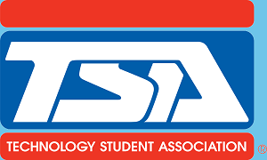

Standards
History

Chapter Awards
Presidency
The Skyline TSA chapter participated in the “Festival of Trees” community service project over the winter. For this project, chapter members donated shampoo and other basic amenities for the less fortunate members of the Utah community.
Our chapter also came together to raise funds for our VEX team. Through this we were able to procure hundreds of dollars which were used to buy parts and other necessities for our robotics teams.

Skyline offers a several intensive Visual courses for our students.
Skyline’s CTE program not only gives students a technical background but also skills that will assist them with their day-to-day lives.

Computer sciences are a core part of Skyline’s CTE program and offer wide-ranging opportunities in programming languages and IDEs.
Skyline High School’s robotics team is a powerhouse in statewide competitions and is supplemented by the assortment of computer science and robotics courses offered in our CTE program.
Many hands-on courses like Woodshop and Auto Mechanics are also available as a part of Skyline’s CTE program.

Many Skyline CTE classes also familiarize students with specific trades, such as law enforcement and sports medicine.